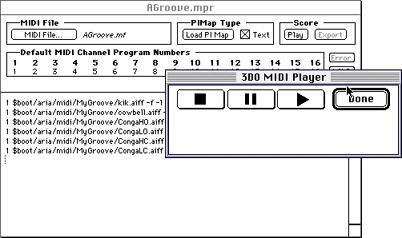

Once your PIMap file is in the MIDI project window, you have to tell ARIA
where to find the MIDI file, then load the PIMap file.
To load the files, follow these steps:
To locate the MIDI file, click on the MIDI File button in the top-left
corner of the new MIDI project document and select the MIDI file you want
to play.
Finally, click the Load PIMap button, which is also in the top row to
the right of the MIDI File box.
Note: Loading the PIMap and MIDI file takes a while. Progress
is reported in the Debugger Terminal window. If you bring the Debugger
Terminal window to the foreground while loading the PIMap, the procedure
runs more quickly.
When the PIMap finishes loading, click on the Play button in the MIDI
project box to load the MIDI file.
Click the Play button (single arrow) in the dialog that appears to
play the MIDI file on the 3DO Station.

Figure 2: MIDI project window with 3DO MIDI Player dialog
box.
If you have problems, check the volume on your TV monitor and adjust
it if necessary.